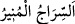

aydınlatıcı bir kandil olur. Onu rüşd/olgunluk yollarına delâlet eder, nefsinin ayıp ve
azgınlığını gösterir.
Burada “izin” kelimesi zikredilmiş, sebebiyet alakası ile mecâzen kolaylaştırma
murâd edilmiştir. Çünkü başkasının mülkünde tasarruf etmek zordur. Ancak mülk sahibi
izin verirse iş kolaylaşır. İzin kelimesi bir şeye icâzet ve ruhsat verildiğini bildirmek
demek olan hakîkî mânâsına hamledilmemiştir. Çünkü bu mânâ zaten Allah Teâlâ’nın
“gönderdik.” ve “Allâh’a dâvetçi” kavlinden anlaşılmaktadır.
Allah Teâlâ dâveti izinle kayıtlamıştır. Çünkü dâvet ancak Allah Teâlâ’nın kudsî
cihetinden gelecek bir yardım ve destek ile hâsıl olacak zor bir iştir. Nasıl böyle
olmasın ki? Bu dâvet yüzleri, zatları ve gönülleri halkın semtinden Hallâk’a döndürmek,
boyunlarına pek de alışık olmadıkları kulluk boyunduruğunu takmaktır.
Büyüklerden birisi şöyle demiştir: Burada “Allâh’ın izniyle” demek Allâh’ın emriyle,
senin tabiat ve görüşünle değil, demektir. Çünkü tabiatlarının hükmü kâmil zatlardan
kaldırılmıştır. Bu yüzden onlar ancak Azîz ve Celîl olan Allâh’ın zâtında fenâya ermek
sûretiyle sözlü ve amelî olarak dâvette bulunurlar.
“Ve nûr saçan bir kandil olarak (gönderdik).”
“__WORD__, fitil ile yanıp parlayan kandil, yâni kandil (mum) fitilindeki ateş parçası
demektir. “__WORD__ aydınlık ve ışık veren kandildir.
Bilesin ki Allah Teâlâ Peygamberimiz (a.s.)’i bir kaç sebepten kandile benzetmiştir:
1- Karanlıkta çevresini aydınlatan kandil ile maksûdun semtine yol bulunup ulaşıldığı
gibi cehâlet ve azgınlığın karanlıklarında Hz. Peygamber (s.a.) ile aydınlanılır ve O’nun
nurlarıyla rüşd/olgunluk ve hidâyet yollarına ulaşılır. Nitekim bazıları şöyle demiştir:
Hak Teâlâ Peygamberimize ‘kandil’ dedi. Çünkü kandilin ışığı karanlığı yok eder. O
Hazret’in (a.s) varlığı da dünyâdaki küfür (inkâr) karanlığını yok etmiştir.
Allâh’ın nurundan aydınlık bir kandilsin,
Cihânı karanlıktan kurtaran sensin.
2- Evde kaybolan her şey, kandil ışığı sâyesinde bulunabilir. İnsanlardan gizli kalan
hakîkatler de bu kandilin ışığı ile mârifet nurlarını alacak olanlara aydınlanmıştır.
Canın ilimle âşinâ olması onun sâyesindedir,
Cihânın gözünün aydınlanması onun sâyesindedir.
Mânâ hazînesinin kapısını açmış,
Oradan gönül ehli olanlara sermâye vermiştir.
3- Kandil, evde oturanlar için güvenlik ve rahatlama sebebidir. Hırsız ise kandilden
utanır, rahatsız olur. O Hazret (a.s.) da dostları için selâmet vesîlesi, inkârcılar için ise
hüsran ve pişmanlık sebebidir.
4- Bir kandilden bin kandil tutuşturulur ve o kandilin nur ve ışığından hiçbir şey